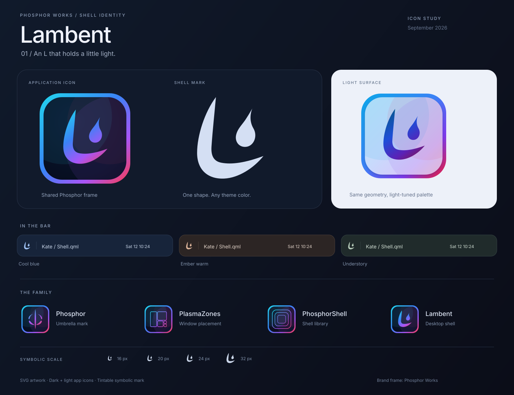

<!doctype html>
<!-- SPDX-FileCopyrightText: 2026 fuddlesworth -->
<!-- SPDX-License-Identifier: CC-BY-SA-4.0 -->
<html lang="en"><meta charset="utf-8"><meta name="viewport" content="width=device-width,initial-scale=1"><title>Lambent icon study</title><style>body{margin:0;background:#0b0d18;color:#d6e1f4;font:16px system-ui,sans-serif}main{max-width:1440px;margin:auto}img{display:block;width:100%;height:auto}nav{padding:24px 4% 40px;display:flex;gap:12px;flex-wrap:wrap}a{color:#bdd7ff;border:1px solid #334158;border-radius:10px;padding:12px 18px;text-decoration:none}a:hover{background:#202f48}footer{font-size:13px;color:#8394ad;padding:0 4% 40px}footer a{padding:0;border:0}</style><main><nav><a download href="lambent-dark.svg">Dark SVG</a><a download href="lambent-light.svg">Light SVG</a><a download href="lambent-symbolic.svg">Tintable SVG</a><a download href="lambent-mark.svg">Gradient mark</a><a download href="lambent-dark-512.png">Dark PNG</a><a download href="lambent-light-512.png">Light PNG</a></nav><footer>Concept artwork. Frame and palette adapted from <a href="https://phosphor-works.github.io/brand/">Phosphor Works</a>. New Lambent motif. <a href="https://creativecommons.org/licenses/by-sa/4.0/">CC BY-SA 4.0</a>.</footer></main></html>